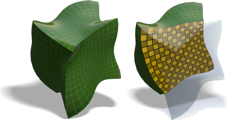
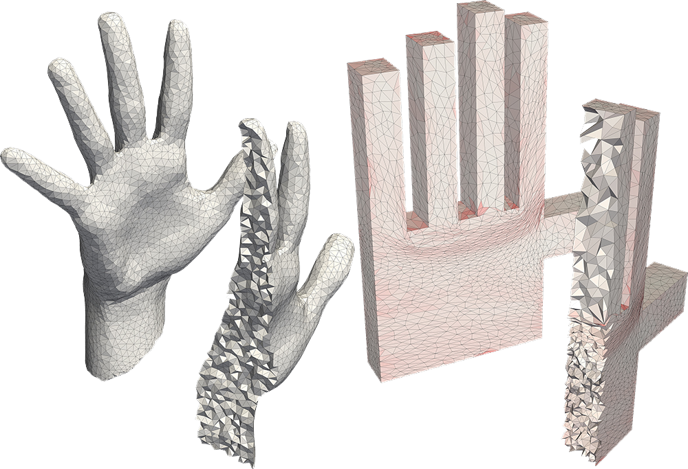

Noam Aigerman
Weizmann Institute of Science
Department of Computer Science and Applied Mathematics
Ziskind building, Room 36
Email firstname.lastname@weizmann.ac.il
Phone +972-8-934-4443
Department of Computer Science and Applied Mathematics
Ziskind building, Room 36
Email firstname.lastname@weizmann.ac.il
Phone +972-8-934-4443
I am a PhD student under the supervision of Dr. Yaron Lipman.
My main fields of interest are Geometry Processing, Numerical Optimization and Computer Graphics.
Teaching 2015: Organizing the Optimization reading group with Shahar.
2013: TA for "Numerical Linear Algebra and Convex Optimization".
Publications
(hover over a project's image for a one-sentence summary)
-
 these bijections from self-overlapping flattenings.")
-

Controlling Singular Values with Semidefinite Programming
-

Injective and Bounded Distortion Mappings in 3D